正文
Tutorial 29 -Basic image processing using scikit-image library
缩放
Rescale, resize, and downscale — skimage v0.19.2 docs
- Rescale 操作按给定的缩放因子调整图像的大小。缩放因子可以是单个浮点值，也可以是多个值——每个轴上都有一个。
- Resize 也有同样的作用，但允许指定输出图像的形状而不是缩放因子。
- Downscale 的目的是通过整数因子对 n 维图像进行下采样，使用作为函数参数的大小因子的每个块的元素的局部均值。
from matplotlib import pyplot as plt
from skimage import io, color
from skimage.transform import rescale, resize, downscale_local_meanimg = io.imread('images/Osteosarcoma_01.tif', as_gray=True) # 读取文件
img_rescaled = rescale(img, 1.0 / 4.0, anti_aliasing=False) # 按比例缩放
img_resized = resize(img, (200, 200), anti_aliasing=True) # 按大小缩放plt.imshow(img, cmap='gray')<matplotlib.image.AxesImage at 0x212d8734a48>
{kind=link}
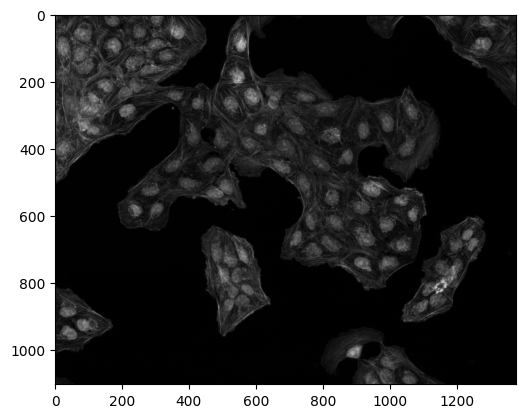
plt.imshow(img_rescaled, cmap='gray')<matplotlib.image.AxesImage at 0x212db1f7ac8>
{kind=link}
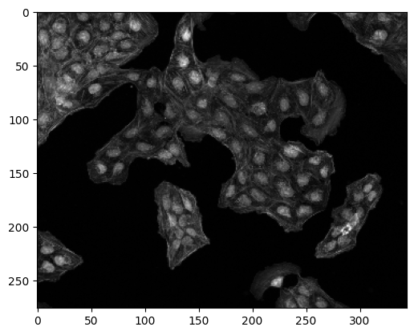
plt.imshow(img_resized, cmap='gray')<matplotlib.image.AxesImage at 0x212db2830c8>
{kind=link}
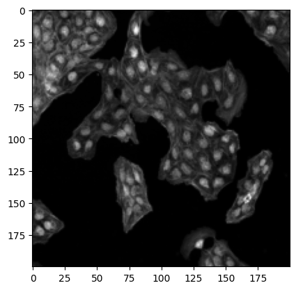
img_downscaled = downscale_local_mean(img, (4, 3)) # 拉伸
plt.imshow(img_downscaled, cmap='gray')<matplotlib.image.AxesImage at 0x212db506788>
{kind=link}
gaussian 模糊
from skimage import io
from skimage.filters import gaussian, sobel
img = io.imread("images/Osteosarcoma_01_25Sigma_noise.tif")
plt.imshow(img)
gaussian_using_skimage = gaussian(img, sigma=1, mode='constant', cval=0.0)
plt.imshow(gaussian_using_skimage)C:\Users\gzjzx\anaconda3\envs\wxpython37\lib\site-packages\skimage\_shared\utils.py:348: RuntimeWarning: Images with dimensions (M, N, 3) are interpreted as 2D+RGB by default. Use `multichannel=False` to interpret as 3D image with last dimension of length 3.
return func(*args, **kwargs)
<matplotlib.image.AxesImage at 0x212dbb52848>
{kind=link}
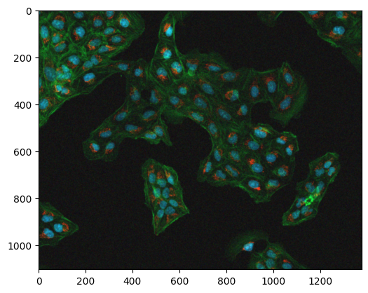
sobel 边缘检测
img_gray = io.imread("images/Osteosarcoma_01.tif", as_gray=True)
sobel_img = sobel(img_gray) #Works only on 2D (gray) images
plt.imshow(sobel_img, cmap='gray')<matplotlib.image.AxesImage at 0x212dc0185c8>
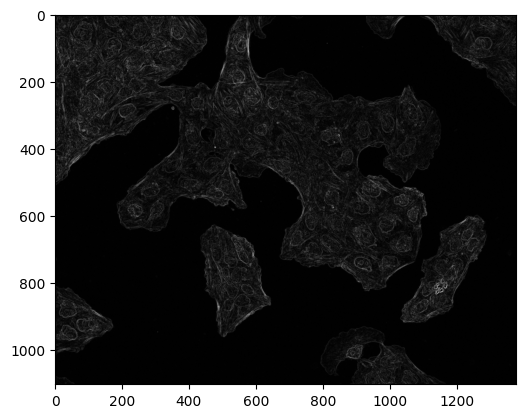
{kind=link}
使用 OpenCV 操作下面这张图:
{kind=link}
OpenCV 读取到的都是 BGR 颜色通道, 此时使用 matplotlib 显示会导致颜色发生变化
import cv2
import matplotlib.pyplot as plt
img = cv2.imread('images/RGBY.jpg', 1) # Color is BGR not RGB
plt.imshow(img)<matplotlib.image.AxesImage at 0x1e3d6809370>
{kind=link}
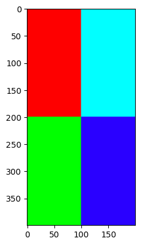
缩放
import cv2
import matplotlib.pyplot as plt
img = cv2.imread('images/RGBY.jpg', 1)
resized = cv2.resize(img, None, fx=2, fy=2, interpolation=cv2.INTER_CUBIC)
cv2.imshow('original pic', img)
cv2.imshow('resized pic', resized)
cv2.waitKey(0)
cv2.destroyAllWindows(){kind=link}
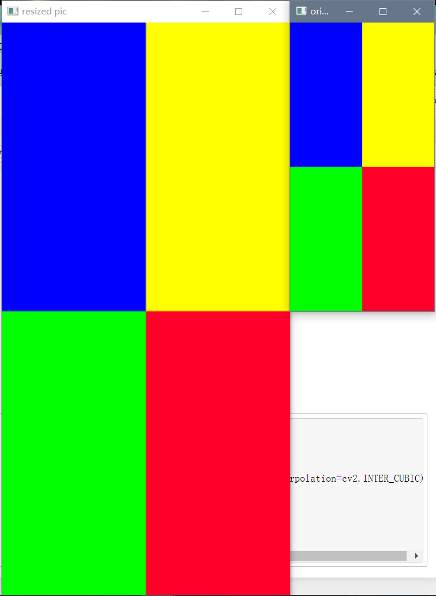
img.shape(400, 200, 3)
print('Top left', img[0, 0])
print('Top right', img[0, -1])
print('Bottom left', img[-1, 0])
print('Bottom right', img[-1, -1])Top left [254 0 0]
Top right [ 1 255 255]
Bottom left [ 1 255 0]
Bottom right [ 42 0 255]
分离颜色通道
blue = img[:, :, 0]
green = img[:, :, 1]
red = img[:, :, 2]或
blue, green, red = cv2.split(img)cv2.imshow('red pic', red)
cv2.waitKey(0)
cv2.destroyAllWindows(){kind=link}
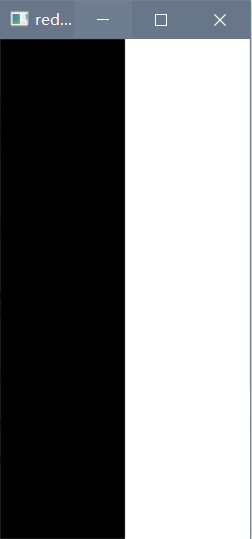
合并颜色通道
img_merged = cv2.merge((blue, green, red))
cv2.imshow('merged pic', img_merged)
cv2.waitKey(0)
cv2.destroyAllWindows(){kind=link}
Canny 边缘检测
import cv2
img = cv2.imread('images/Osteosarcoma_01.tif', 0)
edges = cv2.Canny(img, 100, 200)
cv2.imshow('Original Image', img)
cv2.imshow('Canny', edges)
cv2.waitKey(0)
cv2.destroyAllWindows(){kind=link}
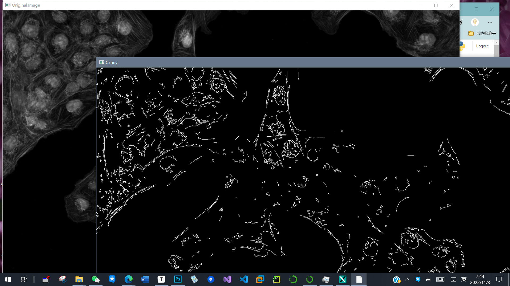
Tutorial 31 - Image filtering in python - Unsharp mask
Unsharp Mask(USM)锐化算法的的原理及其实现。_大熊背的博客-CSDN 博客_usm 锐化算法
{kind=link}
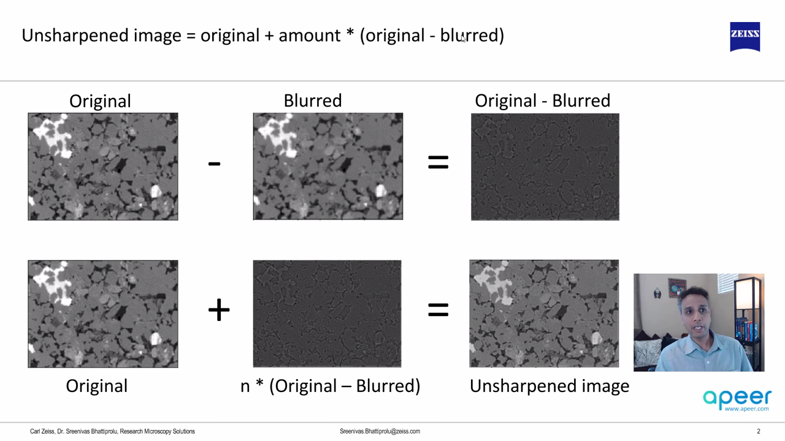
原理
from skimage import io, img_as_float
from skimage.filters import unsharp_mask
from skimage.filters import gaussian
img = img_as_float(io.imread('images/sandstone_blur_2sigma.tif', as_gray=True))
gaussian_img = gaussian(img, sigma=2, mode='constant', cval=0.0)
img2 = (img - gaussian_img) * 2.
img3 = img + img2
from matplotlib import pyplot as plt
fig = plt.figure(figsize=(10, 10))
ax1 = fig.add_subplot(131)
ax1.imshow(img, cmap='gray')
ax1.title.set_text('1st')
ax2 = fig.add_subplot(132)
ax2.imshow(img2, cmap='gray')
ax2.title.set_text('img2')
ax3 = fig.add_subplot(133)
ax3.imshow(img3, cmap='gray')
ax3.title.set_text('img3')
plt.show(){kind=link}
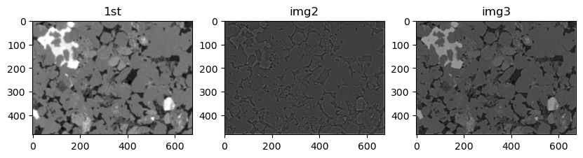
unsharp_mask 函数
from skimage import io
from skimage.filters import unsharp_mask
img = io.imread("images/sandstone_blur_2sigma.tif")
#Radius defines the degree of blurring
#Amount defines the multiplication factor for original - blurred image
unsharped_img = unsharp_mask(img, radius=3, amount=2)
import matplotlib.pyplot as plt
fig = plt.figure(figsize=(12, 12))
ax1 = fig.add_subplot(1,2,1)
ax1.imshow(img, cmap='gray')
ax1.title.set_text('Input Image')
ax2 = fig.add_subplot(1,2,2)
ax2.imshow(unsharped_img, cmap='gray')
ax2.title.set_text('Unsharped Image'){kind=link}
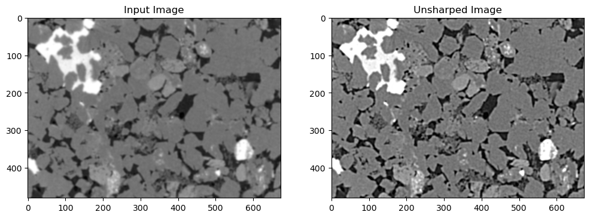
Tutorial 32 - Image filtering in python - Gaussian denoising for noise reduction
{kind=link}
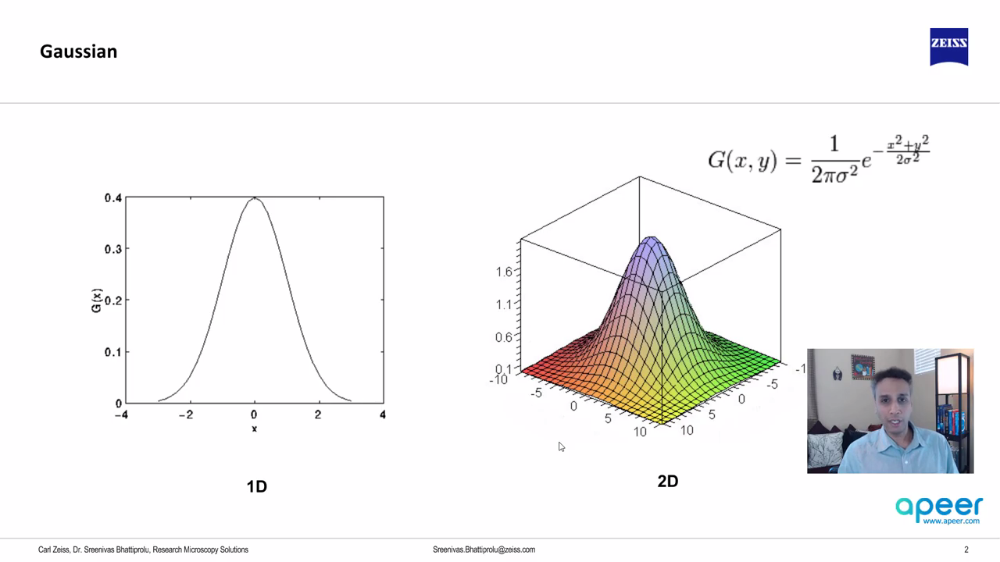
import cv2
from skimage import io, img_as_float
from skimage.filters import gaussian
img_gaussian_noise = img_as_float(io.imread('images/Osteosarcoma_01_25Sigma_noise.tif', as_gray=True))
img_salt_pepper_noise = img_as_float(io.imread('images/Osteosarcoma_01_8bit_salt_pepper.tif', as_gray=True))
img = img_gaussian_noise
gaussian_using_cv2 = cv2.GaussianBlur(img, (3,3), 0, borderType=cv2.BORDER_CONSTANT)
gaussian_using_skimage = gaussian(img, sigma=1, mode='constant', cval=0.0)
#sigma defines the std dev of the gaussian kernel. SLightly different than
#how we define in cv2
cv2.imshow("Original", img)
cv2.imshow("Using cv2gaussian", gaussian_using_cv2)
cv2.imshow("Using skimage", gaussian_using_skimage)
#cv2.imshow("Using scipy2", conv_using_scipy2)
cv2.waitKey(0)
cv2.destroyAllWindows() {kind=link}
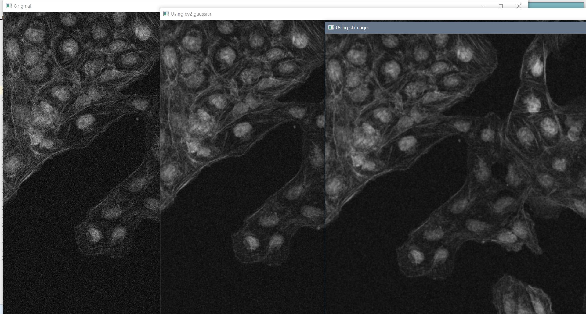
Tutorial 33 - Image filtering in python - Median filter for denoising images
- 中值滤波清理椒盐噪声
{kind=link}
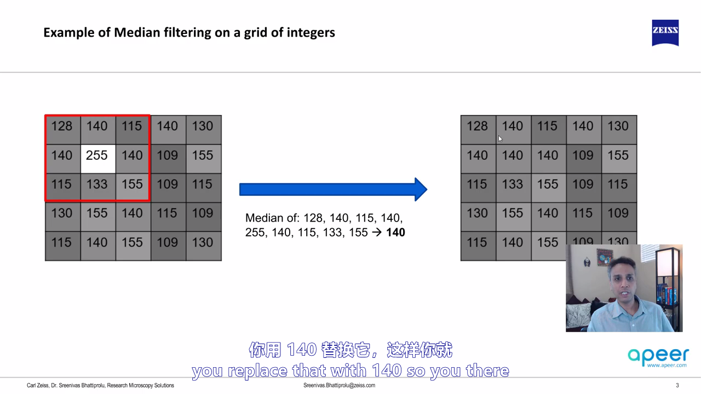
OpenCV
import cv2
# Needs 8 bit, not float.
img_gaussian_noise = cv2.imread('images/Osteosarcoma_01_25Sigma_noise.tif', 0)
img_salt_pepper_noise = cv2.imread('images/Osteosarcoma_01_8bit_salt_pepper_cropped.tif', 0)
img = img_gaussian_noise
median_using_cv2 = cv2.medianBlur(img, 3)skimage
from skimage.filters import median
from skimage.morphology import disk
"""
Disk creates a circular structuring element,
similar to a mask with specific radius
Disk 创建一个圆形结构元素，类似于具有特定半径的掩码
"""
disk(3)array([[0, 0, 0, 1, 0, 0, 0],
[0, 1, 1, 1, 1, 1, 0],
[0, 1, 1, 1, 1, 1, 0],
[1, 1, 1, 1, 1, 1, 1],
[0, 1, 1, 1, 1, 1, 0],
[0, 1, 1, 1, 1, 1, 0],
[0, 0, 0, 1, 0, 0, 0]], dtype=uint8)
median_using_skimage = median(img, disk(3), mode='constant', cval=0.0)cv2.imshow('Original', img)
cv2.imshow('cv2median', median_using_cv2)
cv2.imshow('Using skimage median', median_using_skimage)
cv2.waitKey(0)
cv2.destroyAllWindows(){kind=link}
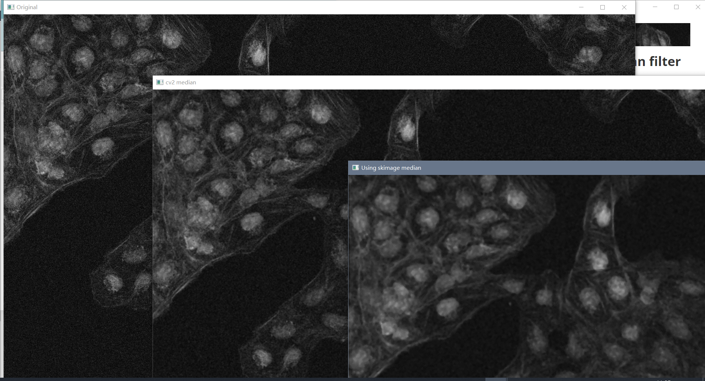
Tutorial 34 - Image filtering in python - Bilateral filter for image denoising
双边滤波 - Bilateral Filter - 知乎 (zhihu.com)
OpenCV
import cv2
img_gaussian_noise = cv2.imread('images/Osteosarcoma_01_25Sigma_noise.tif', 0)
img = img_gaussian_noise
bilateral_using_cv2 = cv2.bilateralFilter(img, 5, 20, 100, borderType=cv2.BORDER_CONSTANT)
cv2.imshow("Original", img)
cv2.imshow("cv2 bilateral", bilateral_using_cv2)
cv2.waitKey(0)
cv2.destroyAllWindows() {kind=link}
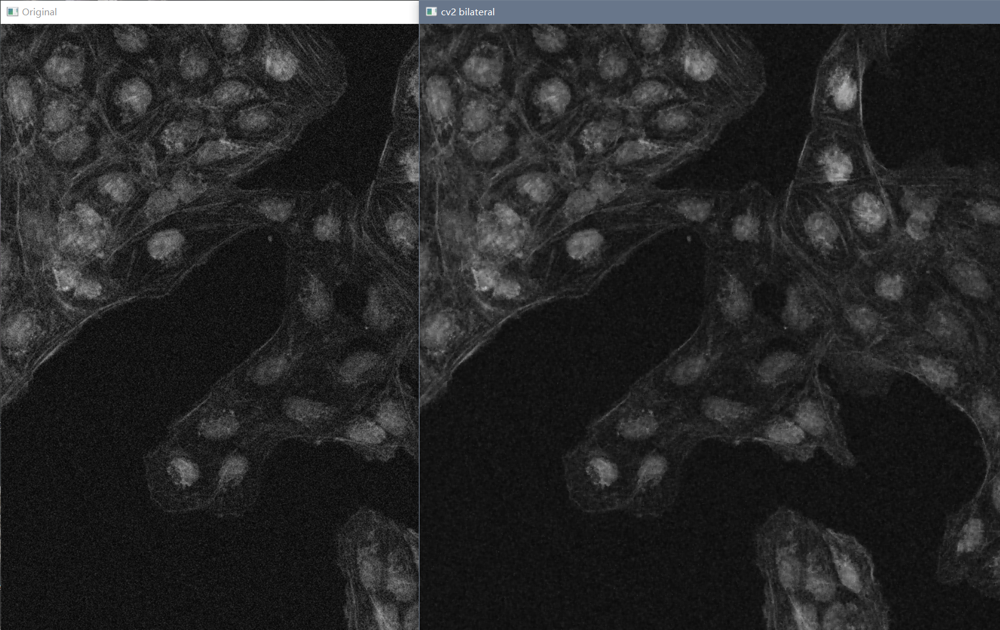
Skimage
视频上说很慢..好像确实挺慢
import cv2
from skimage.restoration import denoise_bilateral
img_gaussian_noise = cv2.imread('images/Osteosarcoma_01_25Sigma_noise.tif', 0)
img = img_gaussian_noise
bilateral_using_skimage = denoise_bilateral(img, sigma_color=0.05, sigma_spatial=15,
multichannel=False)
cv2.imshow("Using skimage bilateral", bilateral_using_skimage)
cv2.waitKey(0)
cv2.destroyAllWindows() {kind=link}
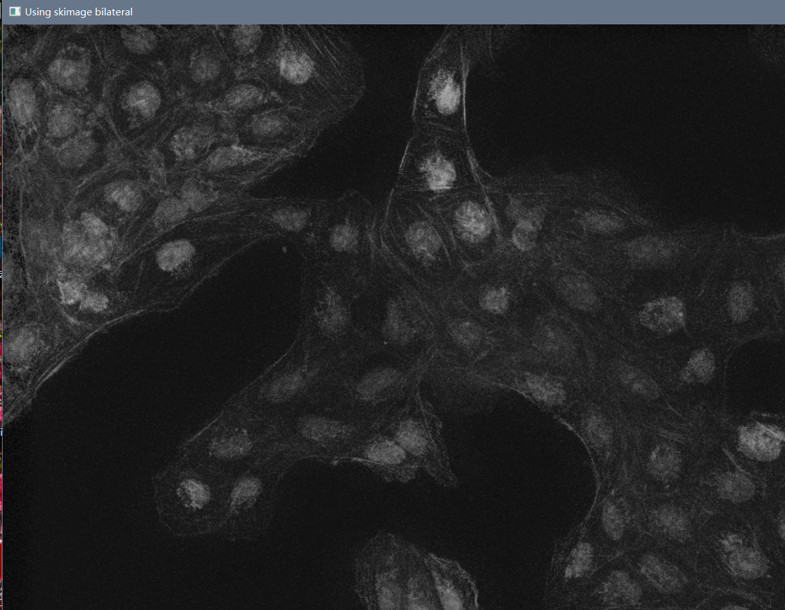
Tutorial 35 - Image filtering in python - Non-local means -NLM- filter for image denoising
NLM 去噪算法_SongpingWang 的博客-CSDN 博客_nlm 去噪
{kind=link}
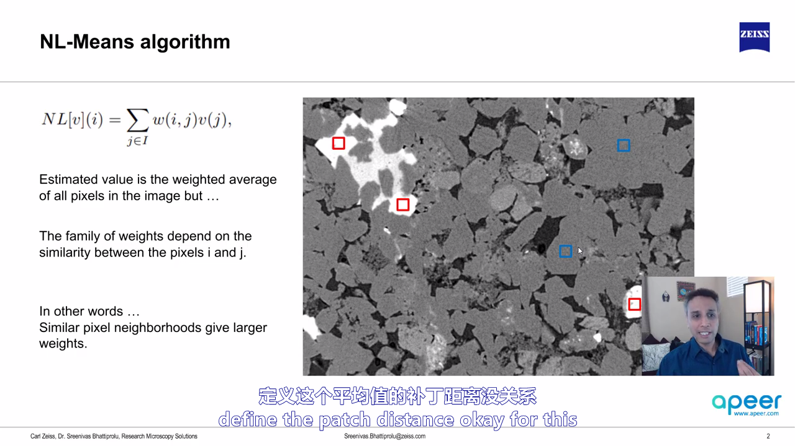
OpenCV
import cv2
import numpy as np
from skimage import io, img_as_float
from skimage.restoration import denoise_nl_means, estimate_sigma
img = img_as_float(io.imread('images/Osteosarcoma_01_25Sigma_noise.tif', as_gray=False))
sigma_est = np.mean(estimate_sigma(img, multichannel=True)) # 从所有三个通道中选取 SigmaC:\Users\gzjzx\AppData\Local\Temp\ipykernel_11200\3289355486.py:7: FutureWarning: `multichannel` is a deprecated argument name for `estimate_sigma`. It will be removed in version 1.0. Please use `channel_axis` instead.
sigma_est = np.mean(estimate_sigma(img, multichannel=True))
denoise_img = denoise_nl_means(img, h=1.15 * sigma_est,
fast_mode=True,
patch_size=5,
patch_distance=3,
multichannel=False)C:\Users\gzjzx\AppData\Local\Temp\ipykernel_11200\4037562389.py:1: FutureWarning: `multichannel` is a deprecated argument name for `denoise_nl_means`. It will be removed in version 1.0. Please use `channel_axis` instead.
denoise_img = denoise_nl_means(img, h=1.15 * sigma_est, fast_mode=True,
cv2.imshow("Original", img)
cv2.imshow("NLM Filtered", denoise_img)
cv2.waitKey(0)
cv2.destroyAllWindows() Skimage
from skimage import img_as_ubyte
import cv2
img_as_8btype = img_as_ubyte(img)
denoise_img_as_8byte = img_as_ubyte(denoise_img)
original_img = cv2.cvtColor(img_as_8btype, cv2.COLOR_BGR2RGB)
final_denoised_img = cv2.cvtColor(denoise_img_as_8byte, cv2.COLOR_BGR2RGB)
cv2.imshow("Original", img)
cv2.imshow("NLM Filtered", denoise_img)
cv2.waitKey(0)
cv2.destroyAllWindows() {kind=link}
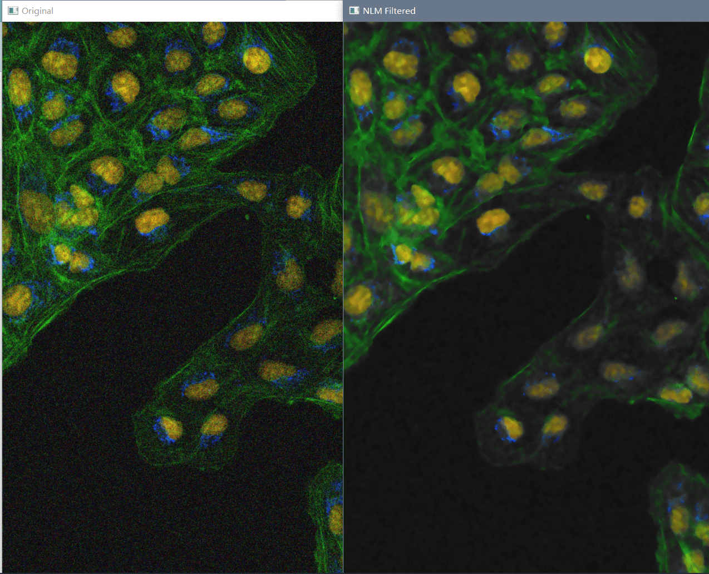
Tutorial 36 - Image filtering in python - Total variation filter -TVF- for image denoising
如何理解全变分（Total Variation，TV）模型？- 知乎 (zhihu.com)
import cv2
from skimage import io, img_as_float
from skimage.restoration import denoise_tv_chambolle
img = img_as_float(io.imread('images/Osteosarcoma_01_25Sigma_noise.tif'))import matplotlib.pyplot as plt
plt.hist(img.flat, bins=100, range=(0, 1))(array([3.26417e+05, 3.28804e+05, 2.18786e+05, 3.22133e+05, 2.09763e+05,
3.05641e+05, 1.95677e+05, 2.78984e+05, 1.75691e+05, 2.45767e+05,
2.25122e+05, 1.37699e+05, 1.89186e+05, 1.14683e+05, 1.55440e+05,
9.30000e+04, 1.23786e+05, 7.34830e+04, 9.66150e+04, 5.74190e+04,
7.61160e+04, 6.49060e+04, 3.82890e+04, 5.08860e+04, 2.99340e+04,
4.02660e+04, 2.39850e+04, 3.23250e+04, 1.93770e+04, 2.62200e+04,
2.38270e+04, 1.45560e+04, 1.99740e+04, 1.24720e+04, 1.74630e+04,
1.06820e+04, 1.50500e+04, 9.49200e+03, 1.31800e+04, 8.33400e+03,
1.13970e+04, 1.06840e+04, 6.63100e+03, 9.49100e+03, 5.84100e+03,
8.29500e+03, 5.25100e+03, 7.20200e+03, 4.53600e+03, 6.35800e+03,
5.76500e+03, 3.56300e+03, 4.89500e+03, 3.01000e+03, 4.29100e+03,
2.55100e+03, 3.53500e+03, 2.23300e+03, 3.10300e+03, 1.92100e+03,
2.55900e+03, 2.31500e+03, 1.38900e+03, 1.87300e+03, 1.18800e+03,
1.62500e+03, 9.85000e+02, 1.37700e+03, 8.49000e+02, 1.17400e+03,
1.06500e+03, 6.06000e+02, 8.26000e+02, 5.57000e+02, 7.52000e+02,
4.27000e+02, 5.95000e+02, 3.91000e+02, 4.85000e+02, 3.13000e+02,
4.03000e+02, 3.87000e+02, 2.18000e+02, 3.35000e+02, 1.88000e+02,
2.95000e+02, 1.65000e+02, 2.55000e+02, 1.36000e+02, 2.35000e+02,
1.82000e+02, 1.15000e+02, 1.68000e+02, 1.13000e+02, 1.63000e+02,
1.13000e+02, 1.63000e+02, 9.40000e+01, 1.32000e+02, 1.18000e+02]),
array([0. , 0.01, 0.02, 0.03, 0.04, 0.05, 0.06, 0.07, 0.08, 0.09, 0.1 ,
0.11, 0.12, 0.13, 0.14, 0.15, 0.16, 0.17, 0.18, 0.19, 0.2 , 0.21,
0.22, 0.23, 0.24, 0.25, 0.26, 0.27, 0.28, 0.29, 0.3 , 0.31, 0.32,
0.33, 0.34, 0.35, 0.36, 0.37, 0.38, 0.39, 0.4 , 0.41, 0.42, 0.43,
0.44, 0.45, 0.46, 0.47, 0.48, 0.49, 0.5 , 0.51, 0.52, 0.53, 0.54,
0.55, 0.56, 0.57, 0.58, 0.59, 0.6 , 0.61, 0.62, 0.63, 0.64, 0.65,
0.66, 0.67, 0.68, 0.69, 0.7 , 0.71, 0.72, 0.73, 0.74, 0.75, 0.76,
0.77, 0.78, 0.79, 0.8 , 0.81, 0.82, 0.83, 0.84, 0.85, 0.86, 0.87,
0.88, 0.89, 0.9 , 0.91, 0.92, 0.93, 0.94, 0.95, 0.96, 0.97, 0.98,
0.99, 1. ]),
<BarContainer object of 100 artists>)
{kind=link}
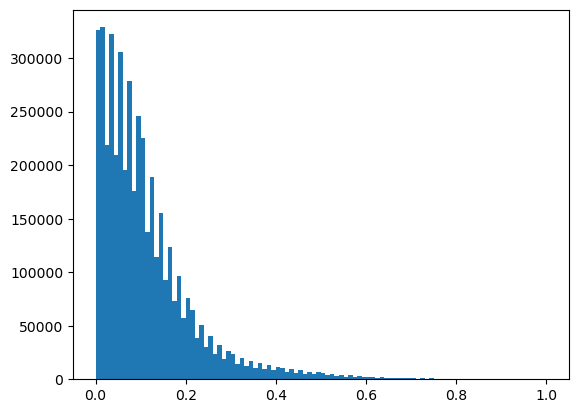
- denoise_tv_chambolle(image, weight=0.1, eps=0.0002, n_iter_max=200, multichannel=False)
- weight: The greater weight, the more denoising (at the expense of fidelity to input). 权重越大，去噪越多(以牺牲对输入的保真度为代价)。
- eps: Relative difference of the value of the cost function that determines the stop criterion. 决定停止准则的代价函数值的相对差值。
- n_iter_max: Max number of iterations used for optimization 用于优化的最大迭代次数
denoise_img = denoise_tv_chambolle(img, weight=0.1, eps=0.0002, n_iter_max=200, multichannel=True)C:\Users\gzjzx\AppData\Local\Temp\ipykernel_8228\1044631449.py:1: FutureWarning: `multichannel` is a deprecated argument name for `denoise_tv_chambolle`. It will be removed in version 1.0. Please use `channel_axis` instead.
denoise_img = denoise_tv_chambolle(img, weight=0.1, eps=0.0002, n_iter_max=200, multichannel=True)
cv2.imshow('Original', img)
cv2.imshow('TV Filtered', denoise_img)
cv2.waitKey(0)
cv2.destroyAllWindows(){kind=link}
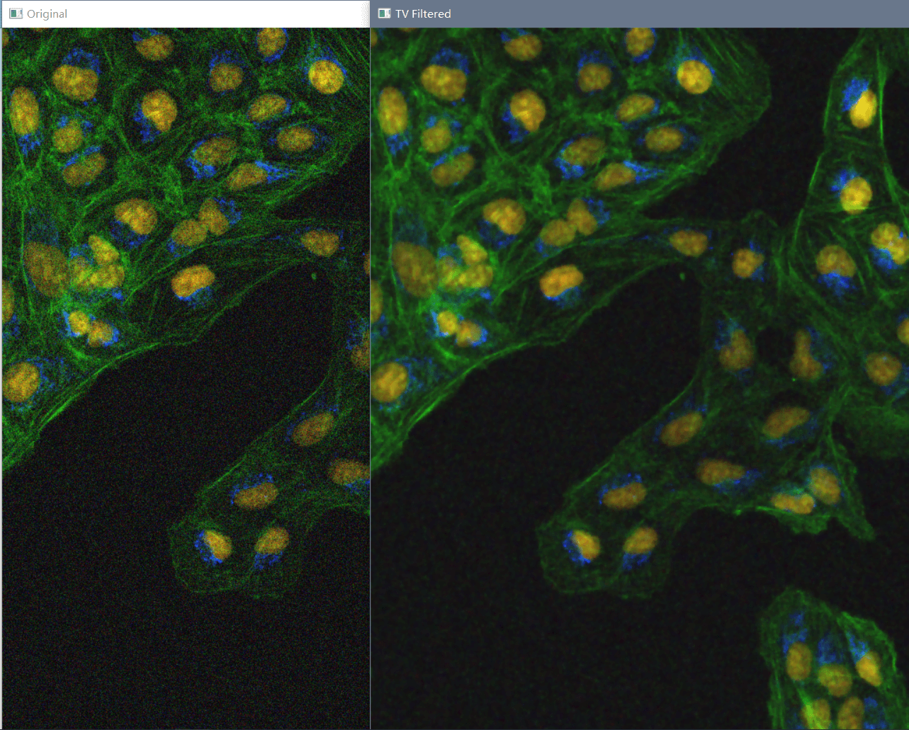
Tutorial 37 - Image filtering in python - Block matching and 3D filtering -BM3D- for image denoising
{kind=link}
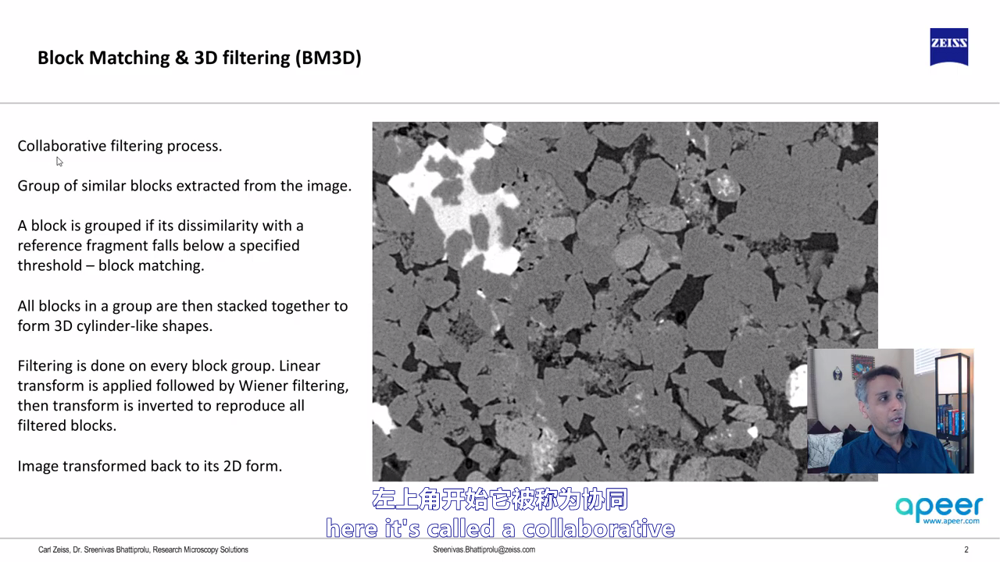
pip install bm3dCollecting bm3d
Downloading bm3d-3.0.9-py3-none-any.whl (8.4 MB)
---------------------------------------- 8.4/8.4 MB 2.3 MB/s eta 0:00:00
Requirement already satisfied: PyWavelets in c:\users\gzjzx\anaconda3\lib\site-packages (from bm3d) (1.3.0)
Requirement already satisfied: numpy in c:\users\gzjzx\anaconda3\lib\site-packages (from bm3d) (1.23.1)
Requirement already satisfied: scipy in c:\users\gzjzx\anaconda3\lib\site-packages (from bm3d) (1.9.0)
Installing collected packages: bm3d
Successfully installed bm3d-3.0.9
Note: you may need to restart the kernel to use updated packages.
from skimage import io, img_as_float
import bm3d
import cv2
noisy_img = img_as_float(io.imread("images/Osteosarcoma_01_25Sigma_noise.tif", as_gray=True))
BM3D_denoised_image = bm3d.bm3d(noisy_img, sigma_psd=0.2, stage_arg=bm3d.BM3DStages.HARD_THRESHOLDING)- bm3d library is not well documented yet, but looking into source code....Bm3d 库还没有很好的文档化，但是查看源代码....
- sigma_psd - noise standard deviation 噪声标准差
- stage_arg: Determines whether to perform hard-thresholding or Wiener filtering. 确定是执行硬阈值还是维纳过滤。
- stage_arg = BM3DStages.HARD_THRESHOLDING or BM3DStages.ALL_STAGES (slow but powerful)
- BM3DStages。HARD_THRESHOLDING 或 BM3DStagesall_stage(缓慢但强大)
All stages performs both hard thresholding and Wiener filtering. 所有阶段都执行硬阈值和维纳滤波。
cv2.imshow("Original", noisy_img)
cv2.imshow("Denoised", BM3D_denoised_image)
cv2.waitKey(0)
cv2.destroyAllWindows(){kind=link}
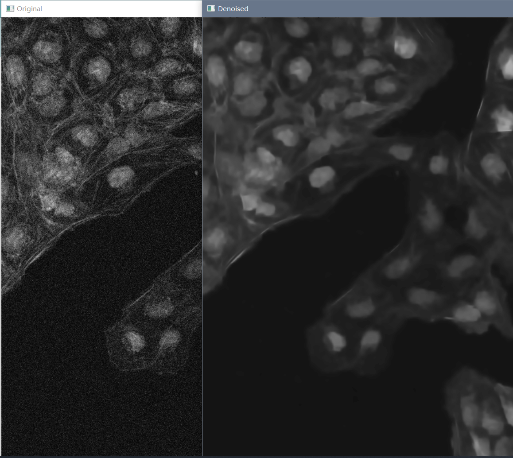
Tutorial 38 - Image filtering in python - Edge detection
Edge Detection filters: 边缘检测滤波器
- Roberts
- Apply a horizontal and vertical filter one after the other. 依次使用 Horizontal 和 Vertical 滤镜。
- Both filters are applied (convoluted) to the image. 两个过滤器都被应用到图像上(卷积)。
- Computes the sum of the squares of the differences between diagonally adjacent pixels. 计算对角线相邻像素之间的差的平方和。
- It highlights regions of high spatial which often correspond to edges. 它突出了高空间区域，通常对应于边缘。
{kind=link}
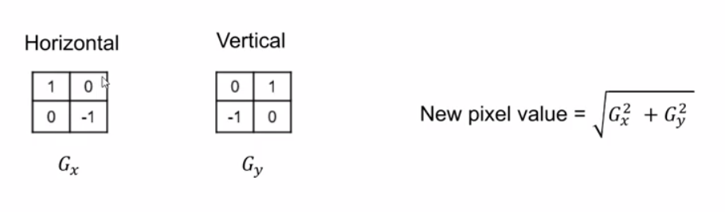
- Sobel
- Very similar to Roberts excerpt with a operator. 与 Roberts 非常相似，只是使用了操作符
{kind=link}
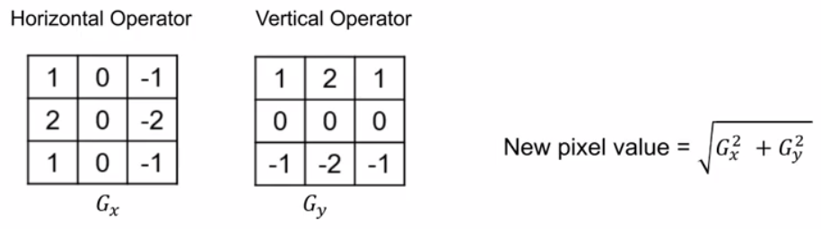
- Scharr
- Typically used to identify gradients along the x-axis (dx=1, dy=0) and y-axis(dx=0, dy=1) independently. 通常用于分别识别沿 x 轴(dx=1, dy=0)和 y 轴(dx=0, dy=1)的梯度。
- Performance is quite similar to Sobel filter. 其性能与 Sobel 滤波器非常相似。
- Farid
- Farid and Simoncelli propose to use a pair of kernels, one for interpolation and another for differentiation (similar to Sobel). Farid 和 Simoncelli 建议使用一对核，一个用于插值，另一个用于微分(类似于 Sobel)。
- Fixed size kernels: (interpolation) and (differentiation) 固定大小的内核:(插值)和(分化)
- Prewitt
- The Prewitt operator is similar to Sobel, excerpt for the operator values.
- Very fast, similar to Sobel.
{kind=link}
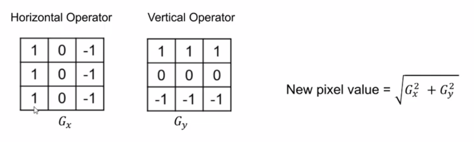
import cv2
img = cv2.imread('images/sandstone.tif', 0){kind=link}
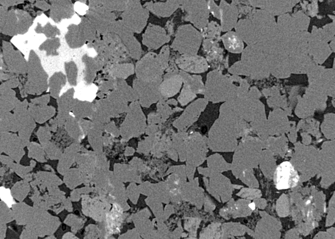
from skimage.filters import roberts, sobel, scharr, prewitt
roberts_img = roberts(img)
sobel_img = sobel(img)
scharr_img = scharr(img)
prewitt_img = prewitt(img)cv2.imshow("Roberts", roberts_img)
cv2.imshow("Sobel", sobel_img)
cv2.imshow("Scharr", scharr_img)
cv2.imshow("Prewitt", prewitt_img)
cv2.waitKey(0)
cv2.destroyAllWindows(){kind=link}
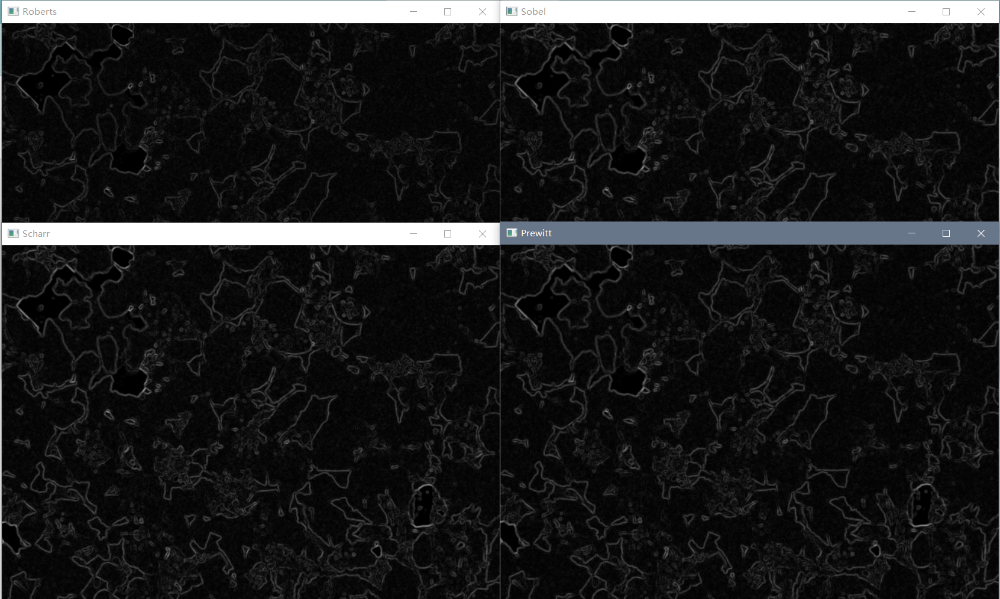
Tutorial 39 - Image filtering in python - Edge detection using Canny
- Multi stage algorithm for edge detection: 多阶段边缘检测算法
- Step 1: Noise reduction - typically uses Gaussian (but any denoising can be used) 降噪-通常使用高斯(但也可以使用任何降噪)
- Step 2: Gradient calculation - detect edges, typically along 4 directions, horizontal, vertical, and two diagonals. (e.g. use Sobel) 梯度计算-检测边缘，通常沿 4 个方向，水平，垂直和两个对角线。 (如使用 Sobel)
- Step 3: Non-maximum suppression - thin out edges by finding pixels with max value in the edge direction. 非最大抑制-通过在边缘方向上找到最大值像素来减少边缘。
- Step 4: Double threshold - determines potential edges by double thresholding to obtain strong, weak and irrelevant pixels for edges. 双阈值-通过双阈值确定潜在的边缘，获得边缘的强、弱和无关像素。
- Step 5: Edge tracking by hysteresis - covert weak edge pixels to strong based on neighboring pixels. 边缘跟踪的迟滞-隐藏弱边缘像素到强基于邻近像素。
from skimage import io, filters, feature
import matplotlib.pyplot as plt
from skimage.color import rgb2gray
import cv2
import numpy as np
img = cv2.imread('images/sandstone.tif', 0)
#Canny
canny_edge = cv2.Canny(img, 50, 80) #Supply Thresholds 1 and 2
#Autocanny
sigma = 0.3
median = np.median(img)
# apply automatic Canny edge detection using the computed median
lower = int(max(0, (1.0 - sigma) * median))
#Lower threshold is sigma % lower than median
#If the value is below 0 then take 0 as the value
upper = int(min(255, (1.0 + sigma) * median))
#Upper threshold is sigma% higher than median
#If the value is larger than 255 then take 255 a the value
auto_canny = cv2.Canny(img, lower, upper)
cv2.imshow("Canny", canny_edge)
cv2.imshow("Auto Canny", auto_canny)
cv2.waitKey(0)
cv2.destroyAllWindows(){kind=link}
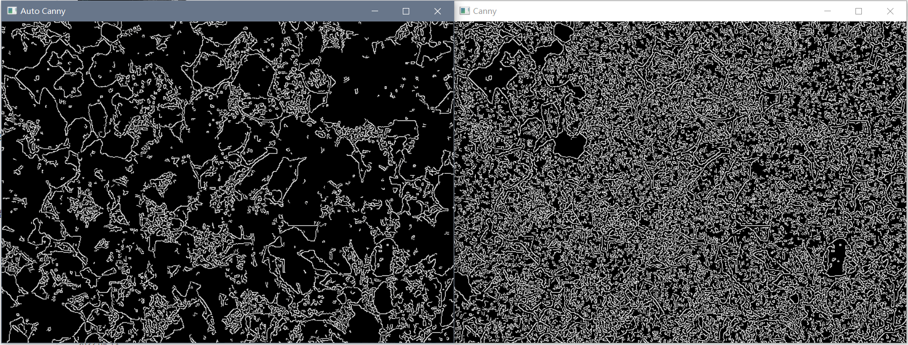
Tutorial 40 - What is Fourier transform and how is it relevant for image processing
Fourier Transform 傅里叶变换
-
Fourier transform breaks a function (signal) into an alternate representation (using sine and cosines)
傅里叶变换将一个函数(信号)分解成另一种表示形式(使用正弦和余弦)
-
In other words, Fourier Transform shows that any signal can be reconstructed by summing up individual sine waves of different frequencies.
换句话说，傅里叶变换表明，任何信号都可以通过将不同频率的单个正弦波相加来重构。
-
{kind=link}
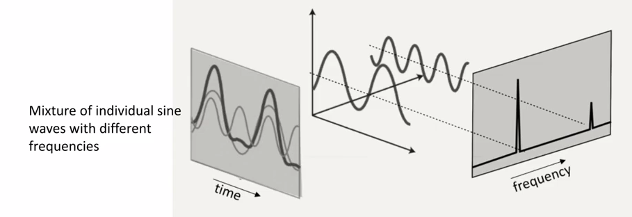
-
Continuous 连续傅里叶变换
-
Discrete 离散傅里叶变换
x = \frac { 1 } { N } \Sigma ^ { N - 1 } _ { n = 0 } x ( { \color { Red } n } ) \cdot e ^ { - \frac { { \color {Blue}j _ {2 \pi } }kn } { N } }
- : Input signal (pixel value)
- : Complex number
代码
- 创建一个正弦波
import cv2
import matplotlib.pyplot as plt
import numpy as np# Generate a 2D sine wave image
x = np.arange(256) # generate values from 0 to 255 (our image size)
y = np.sin(2 * np.pi * x / 3) # calculate sine of x values
# Divide by a smaller number above to increase the frequency.
y += max(y) # offset sine wave by the max value to go out of negative range of sine
# Generate a 256 * 256 image (2D array of the sine wave)
# create 2-D array of sine-wave
img = np.array([[y[j] * 127 for j in range(256)] for i in range(256)], dtype=np.uint8)plt.imshow(img)<matplotlib.image.AxesImage at 0x246a404a700>
{kind=link}
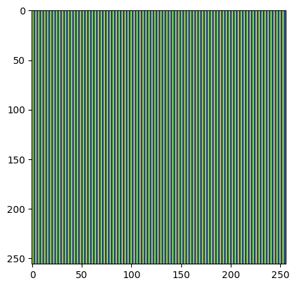
# 改变频率
# Generate a 2D sine wave image
x = np.arange(256) # generate values from 0 to 255 (our image size)
y = np.sin(2 * np.pi * x / 30) # calculate sine of x values
# Divide by a smaller number above to increase the frequency.
y += max(y) # offset sine wave by the max value to go out of negative range of sine
# Generate a 256 * 256 image (2D array of the sine wave)
# create 2-D array of sine-wave
img = np.array([[y[j] * 127 for j in range(256)] for i in range(256)], dtype=np.uint8)
plt.imshow(img)<matplotlib.image.AxesImage at 0x246a542f1c0>
{kind=link}
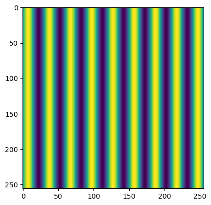
OpenCV
dft = cv2.dft(np.float32(img), flags=cv2.DFT_COMPLEX_OUTPUT)
#Shift DFT. First check the output without the shift
#Without shifting the data would be centered around origin at the top left
#Shifting it moves the origin to the center of the image.
dft_shift = np.fft.fftshift(dft)
#Calculate magnitude spectrum from the DFT (Real part and imaginary part)
#Added 1 as we may see 0 values and log of 0 is indeterminate
magnitude_spectrum = 20 * np.log((cv2.magnitude(dft_shift[:, :, 0], dft_shift[:, :, 1]))+1)
#As the spatial frequency increases (bars closer),
#the peaks in the DFT amplitude spectrum move farther away from the origin
#Center represents low frequency and the corners high frequency (with DFT shift).
#To build high pass filter block center corresponding to low frequencies and let
#high frequencies go through. This is nothing but an edge filter. fig = plt.figure(figsize=(12, 12))
ax1 = fig.add_subplot(2,2,1)
ax1.imshow(img)
ax1.title.set_text('Input Image')
ax2 = fig.add_subplot(2,2,2)
ax2.imshow(magnitude_spectrum)
ax2.title.set_text('FFT of image')
plt.show(){kind=link}
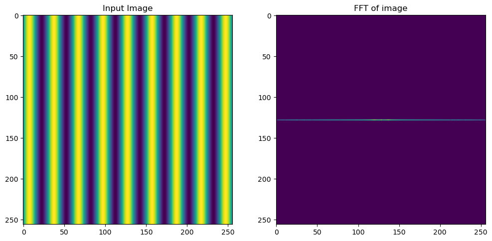
右边图中，每一个点：
1）它到中点的距离描述的是频率
2）中点到它的方向，是平面波的方向
3）那一点的灰度值描述的是它的幅值
img = cv2.imread('images/sandstone.tif', 0) # load an image
dft = cv2.dft(np.float32(img), flags=cv2.DFT_COMPLEX_OUTPUT)
dft_shift = np.fft.fftshift(dft)
magnitude_spectrum = 20 * np.log((cv2.magnitude(dft_shift[:, :, 0], dft_shift[:, :, 1]))+1)
fig = plt.figure(figsize=(12, 12))
ax1 = fig.add_subplot(2,2,1)
ax1.imshow(img)
ax1.title.set_text('Input Image')
ax2 = fig.add_subplot(2,2,2)
ax2.imshow(magnitude_spectrum)
ax2.title.set_text('FFT of image')
plt.show(){kind=link}
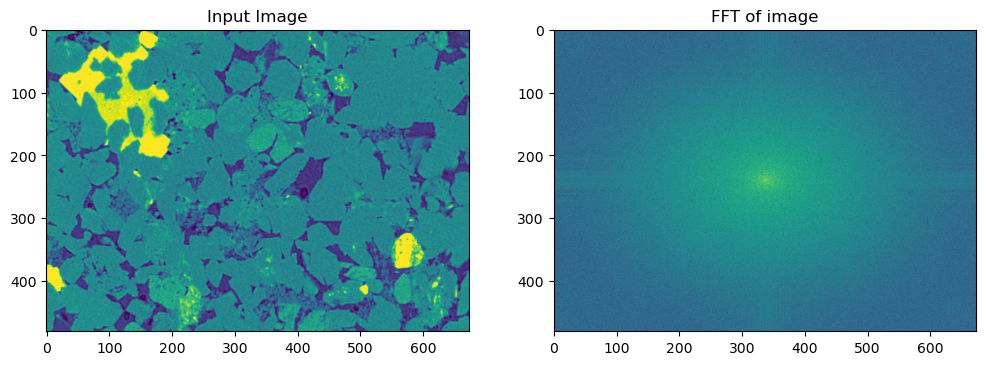
Tutorial 41 - Image filtering using Fourier transform in python
import cv2
from matplotlib import pyplot as plt
import numpy as np
img = cv2.imread('images/sandstone.tif', 0) # load an image- Output is a 2D complex array. 1st channel real and 2nd imaginary
- 输出是一个 2D 复数数组。第一通道是实通道，第二通道是虚通道
- For fft in opencv input image needs to be converted to float32
- 对于 fft 在 opencv 输入图像需要转换为 float32
dft = cv2.dft(np.float32(img), flags=cv2.DFT_COMPLEX_OUTPUT)- Rearranges a Fourier transform X by shifting the zero-frequency component to the center of the array.
- 通过将零频率分量移到数组的中心来重新排列傅里叶变换 X。
- Otherwise it starts at the tope left corenr of the image (array)
- 否则它将从图像(数组)的左核心位置开始
dft_shift = np.fft.fftshift(dft)- Magnitude of the function is 20.log(abs(f))
- 函数的大小为 20.log(abs(f))
- For values that are 0 we may end up with indeterminate values for log.
- 对于 0 的值，我们可能会得到 log 的不确定值。
- So we can add 1 to the array to avoid seeing a warning.
- 因此，我们可以向数组中添加 1 以避免看到警告。
magnitude_spectrum = 20 * np.log(cv2.magnitude(dft_shift[:, :, 0], dft_shift[:, :, 1]))-
使用傅里叶变换进行边缘检测
-
Circular HPF mask, center circle is 0, remaining all ones
- 圆形 HPF 掩码，中心圆为 0，其余均为 1
-
Can be used for edge detection because low frequencies at center are blocked and only high frequencies are allowed.
- 可以用于边缘检测，因为中心的低频被阻挡，只允许高频。
-
Edges are high frequency components.
- 边是高频分量。
-
Amplifies noise.
- 放大噪声。
rows, cols = img.shape
crow, ccol = int(rows / 2), int(cols / 2)
mask = np.ones((rows, cols, 2), np.uint8)
r = 80
center = [crow, ccol]
x, y = np.ogrid[:rows, :cols]
mask_area = (x - center[0]) ** 2 + (y - center[1]) ** 2 <= r*r
mask[mask_area] = 0- apply mask and inverse DFT: Multiply fourier transformed image (values) with the mask values.
- 应用掩模和反 DFT:将傅里叶变换后的图像(值)与掩模值相乘。
fshift = dft_shift * mask- Get the magnitude spectrum (only for plotting purposes)
- 获取幅度谱(仅用于绘图目的)
fshift_mask_mag = 20 * np.log(cv2.magnitude(fshift[:, :, 0], fshift[:, :, 1]))C:\Users\gzjzx\AppData\Local\Temp\ipykernel_19060\199016683.py:1: RuntimeWarning: divide by zero encountered in log
fshift_mask_mag = 20 * np.log(cv2.magnitude(fshift[:, :, 0], fshift[:, :, 1]))
- Inverse shift to shift origin back to top left.
- 反向移位将原点移回左上角。
f_ishift = np.fft.ifftshift(fshift)- Inverse DFT to convert back to image domain from the frequency domain.
- 逆 DFT: 从频域转换回图像域。
- Will be complex numbers
- 会是复数
img_back = cv2.idft(f_ishift)- Magnitude spectrum of the image domain
- 图像域的幅度谱
img_back = cv2.magnitude(img_back[:, :, 0], img_back[:, :, 1])- 绘图
fig = plt.figure(figsize=(12, 12))
ax1 = fig.add_subplot(2,2,1)
ax1.imshow(img, cmap='gray')
ax1.title.set_text('Input Image')
ax2 = fig.add_subplot(2,2,2)
ax2.imshow(magnitude_spectrum, cmap='gray')
ax2.title.set_text('FFT of image')
ax3 = fig.add_subplot(2,2,3)
ax3.imshow(fshift_mask_mag, cmap='gray')
ax3.title.set_text('FFT + Mask')
ax4 = fig.add_subplot(2,2,4)
ax4.imshow(img_back, cmap='gray')
ax4.title.set_text('After inverse FFT')
plt.show(){kind=link}
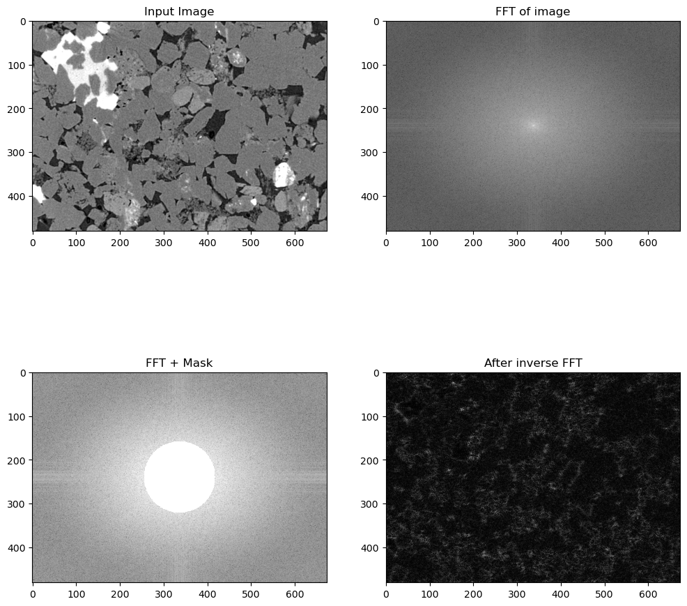
- Circular LPF mask, center circle is 1, remaining all zeros
- 圆形 LPF 掩码，中心圆为 1，其余均为零
- Only allows low frequency components - smooth regions
- 只允许低频组件-平滑区域
- Can smooth out noise but blurs edges.
- 可以消除噪音，但模糊边缘。
rows, cols = img.shape
crow, ccol = int(rows / 2), int(cols / 2)
mask = np.zeros((rows, cols, 2), np.uint8)
r = 100
center = [crow, ccol]
x, y = np.ogrid[:rows, :cols]
mask_area = (x - center[0]) ** 2 + (y - center[1]) ** 2 <= r*r
mask[mask_area] = 1
# Band Pass Filter - Concentric circle mask, only the points living in concentric circle are ones
rows, cols = img.shape
crow, ccol = int(rows / 2), int(cols / 2)
mask = np.zeros((rows, cols, 2), np.uint8)
r_out = 80
r_in = 10
center = [crow, ccol]
x, y = np.ogrid[:rows, :cols]
mask_area = np.logical_and(((x - center[0]) ** 2 + (y - center[1]) ** 2 >= r_in ** 2),
((x - center[0]) ** 2 + (y - center[1]) ** 2 <= r_out ** 2))
mask[mask_area] = 1fshift = dft_shift * mask
fshift_mask_mag = 20 * np.log(cv2.magnitude(fshift[:, :, 0], fshift[:, :, 1]))
f_ishift = np.fft.ifftshift(fshift)
img_back = cv2.idft(f_ishift)
img_back = cv2.magnitude(img_back[:, :, 0], img_back[:, :, 1])
fig = plt.figure(figsize=(12, 12))
ax1 = fig.add_subplot(2,2,1)
ax1.imshow(img, cmap='gray')
ax1.title.set_text('Input Image')
ax2 = fig.add_subplot(2,2,2)
ax2.imshow(magnitude_spectrum, cmap='gray')
ax2.title.set_text('FFT of image')
ax3 = fig.add_subplot(2,2,3)
ax3.imshow(fshift_mask_mag, cmap='gray')
ax3.title.set_text('FFT + Mask')
ax4 = fig.add_subplot(2,2,4)
ax4.imshow(img_back, cmap='gray')
ax4.title.set_text('After inverse FFT')
plt.show()C:\Users\gzjzx\AppData\Local\Temp\ipykernel_19060\2728092902.py:2: RuntimeWarning: divide by zero encountered in log
fshift_mask_mag = 20 * np.log(cv2.magnitude(fshift[:, :, 0], fshift[:, :, 1]))
{kind=link}
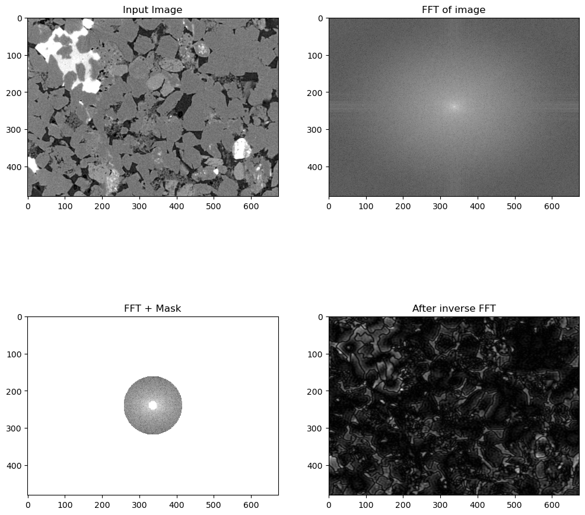